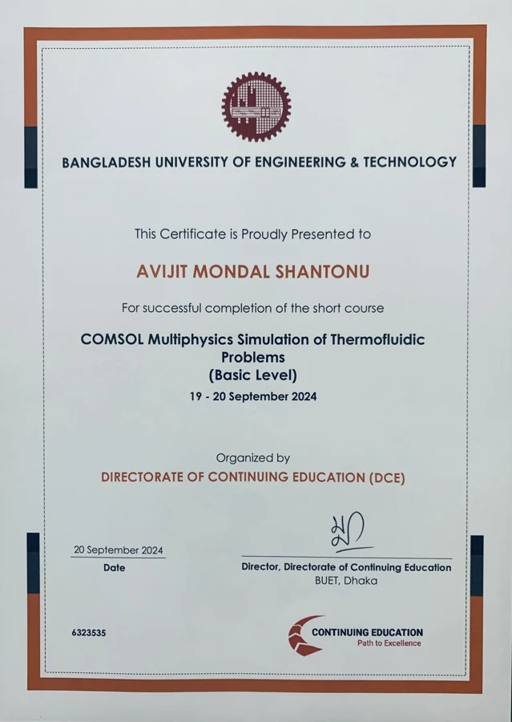
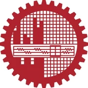
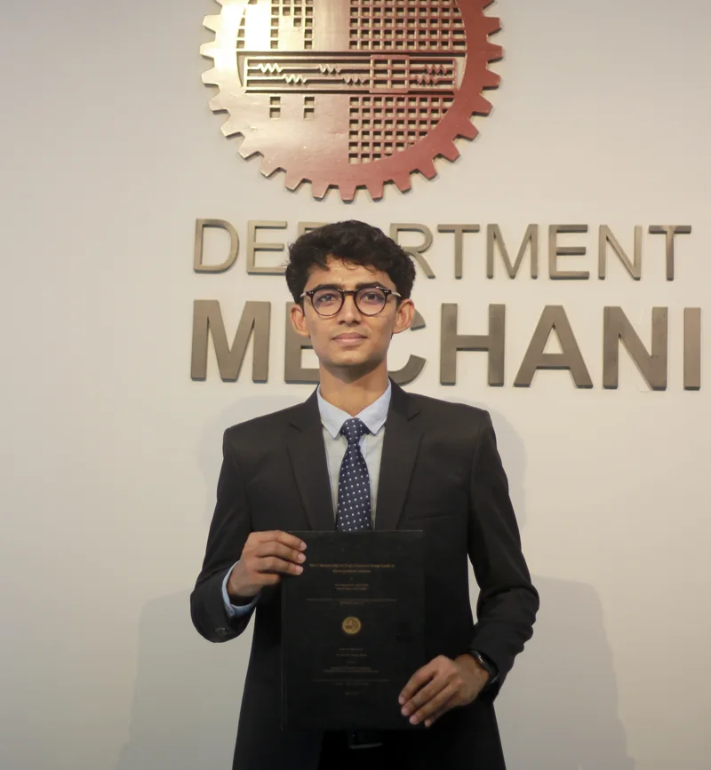
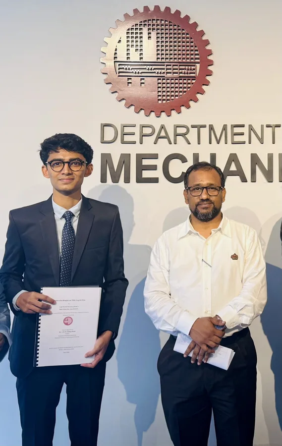
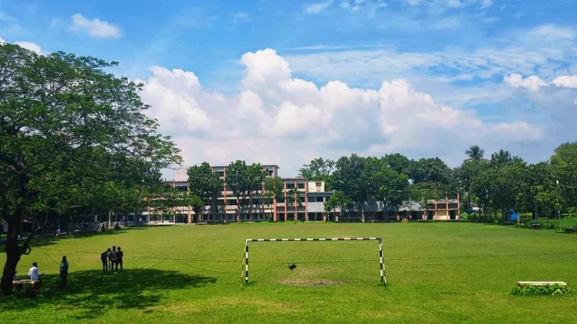
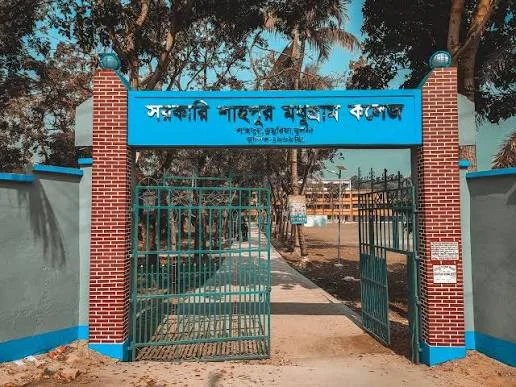
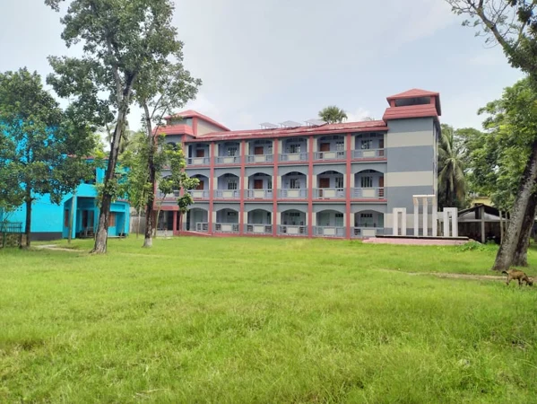
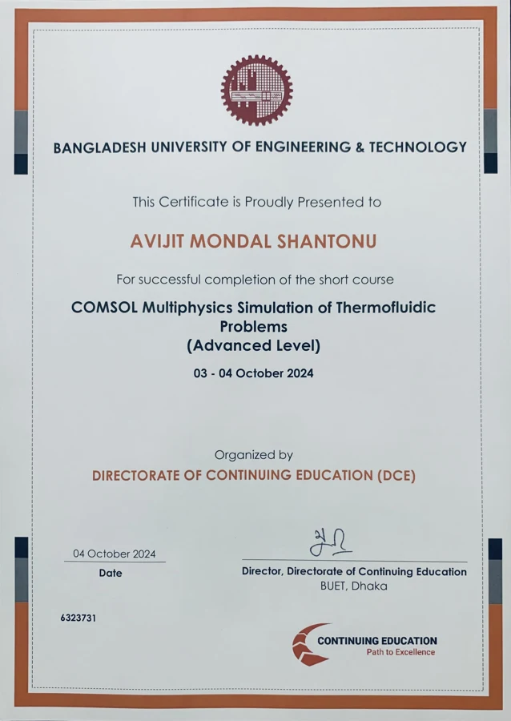

COMSOL Basic
19–20 September 2024
View Certificate ↗My academic journey in mechanical engineering, supported by technical training and continued exploration of engineering sciences.
2021–2026

Bangladesh University of Engineering and Technology (BUET)
Dhaka, Bangladesh
CGPA 3.24 / 4.00
Fluid Mechanics · Thermodynamics · Heat Transfer · Energy and Environment
Numerical Analysis · Thermo-Fluid System Design · Mechanics of Materials · Nuclear Engineering


2018–2020
Govt. Shahpur Madhugram College
Khulna, Bangladesh
GPA 5.00 / 5.00


2013–2018
Shahpur Secondary School
Khulna, Bangladesh
GPA 5.00 / 5.00

September–October 2024
Directorate of Continuing Education (DCE), BUET
Completed Basic and Advanced training in COMSOL Multiphysics, focusing on thermofluidic modelling and numerical analysis.

19–20 September 2024
View Certificate ↗
3–4 October 2024
View Certificate ↗